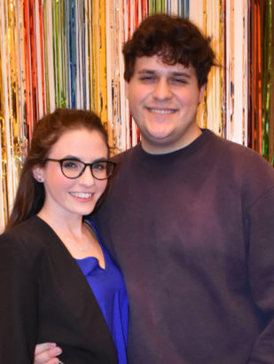

Like my introduction page says, I’m from Arkansas. I’ve spent most of my life in and around Central Arkansas, specifically Little Rock.
Youth
I had an interesting up-bringing in that I was able to witness the weird, “alien” experience that was the decade from 2000 - 2010.
Remnants of the “old world”
When I say “remnants of the old world”, I mean it in the sense that I didn’t grow up around a common suburban-meets-corporate household that many folks, my age, in America did. My dad is a machinist, so I grew up around a lot of other machinists, iron-workers, welders, and the like. Many of these trades, while important, have seen a marked decline in enrollment from members of the Millenial and Gen Z generations. Many of the people my age (myself included) have ended up pursuing careers in software engineering, I.T., liberal arts, or the humanities (literature, visual and performing arts, etc.). See my blog post regarding this here: Should I Go To College????
Due to this lack of labor replenishment, many small to midsize machine shops are starting to close their doors as their older workforce begins to retire. While I did consider following the footsteps of my dad and becoming a machinist, I ultimately decided to go to college.
All in all, it is a decision that I’m glad to have pursued; it exposed me to a different side of the world that I would not have otherwise known (academia).
The 2000s
I feel a certain kinship with people that were born in the late 90s like I was. We each got to grow up in the decade from 2000 - 2010, which was quite literally a unique experience that may never be seen again. While the digital age may have sparked decades prior, the 2000s ushered in a new era of technology that many of us take for granted: the modern internet. Gone away were the days of webrings, GeoCities, and AOL Instant Messenger; long live MySpace and the smartphone.
Okay, maybe not “long live” MySpace, but at least recognize what it meant for many of us at that time- an outlet to experience the crazy-weird cultural boom that was happening amongst us.
Emo makeup, checkered Vans, Riot! by Paramore, the “Numa Numa” song (which you should know is actually a Romanian song named Dragostea Din Tei), anime music videos cut to Evanesence’s Bring Me To Life, and this new streaming platform called YouTube- it was all part of this weird blip in history where we texted each other ringtones and burned CDs.
It was a pretty interesting period of time to grow up in. Whatever some may say about it, it’s important to remember that at least it wasn’t plagued by TikTok and Fortnite.
College Days
I attended college right here at a local university (The University of Arkansas at Little Rock) in Little Rock, and earned a B.Sc. in Information Science (IS). Kind of crazy- I didn’t really feel like my life had really started before I went to college. It was definitely a place where I came “into my own.”
What is Information Science, you may ask? The official definition (from Wikipedia) states that it is “an academic field which is primarily concerned with analysis, collection, classification, manipulation, storage, retrieval, movement, dissemination, and protection of information.” If that reads like a pretty broad definition that doesn’t seem very exciting, that’s because it is and it’s not, respectively.
In reality, Information Science is very cool. In depth- it is actually a cross-functional study that investigates using data and information (yes, those are two different concepts) to solve problems across all sorts of disciplines.
The Information Science program at UALR gave me a foundational preparation to enter the workforce, sans much of the confusion and doubt. The modern world is data-centric, and is only becoming more so with each passing year.
However, by far, the most important thing that came out of going to college was meeting a very special woman: Caroline. She and I met during summer orientation before our freshman year at UALR, and by that second semester we had started dating. Fast forward 6 glorious years and we got married (despite the COVID-19 pandemic).
Caroline
There is only one word that I can use to describe her: awesome. She’s the coolest person that I’ve ever met, and I’m extremely proud to be her husband. She is an electrical engineer, currently working at a power systems company here in Little Rock.
Here is both of us right after her birthday in 2021:
